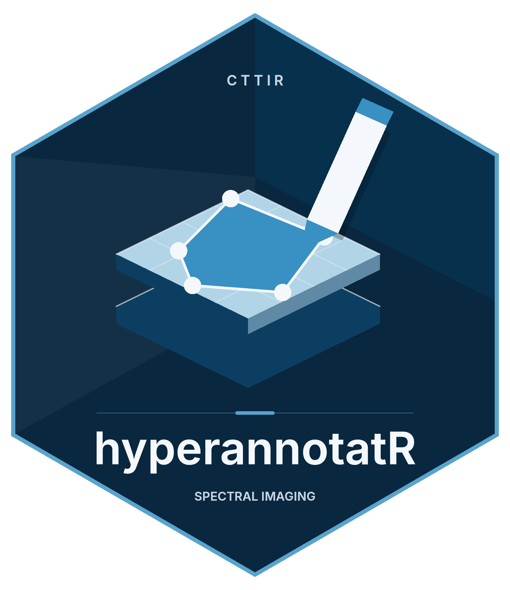

Image handles and windowed readers
Reading an image returns an annot_image with dimensions,
pyramid levels, bands, pixel size and a tile accessor,
at_tile(). The ENVI, TIVITA SpecCube and OME readers open
only the metadata and read the requested windows from the file. The
plain TIFF and raster readers read the complete image when it is opened;
TIFF decoding runs in a separate R process, which isolates native
decoder failures but does not reduce the memory the decoded image needs.
at_image_capabilities() reports the effective strategy,
including images that still hold a pixel snapshot in memory. Allow
additional memory for decoder buffers, returned tiles and the tile
cache.
img <- at_example_image("tissue")
img
#> <annot_image> example_tissue.png
#> backend: "raster" | dtype: "uint8"
#> size: 512 x 512 px | levels: 1 | bands: 3
#> pixel size: 1 x 1 px
dim(img)
#> [1] 512 512 3The dim() of a handle is
c(width, height, bands). Printing it summarises the
backend, data type and extent; the metadata accessors use the fields
already read.
str(at_image_capabilities(img))
#> List of 5
#> $ metadata_only: logi FALSE
#> $ window_read : logi FALSE
#> $ samples : chr "display-converted-0-255"
#> $ io : chr "memory"
#> $ lifecycle : chr "retained pixel snapshot"
at_image_capabilities(at_example_image("cube"))$window_read
#> [1] TRUEA handle also exposes accessors for everything an annotation workflow
needs: at_n_bands() and at_bands() for the
channels, at_pixel_size() for physical scale, and
at_meta() for backend-specific keys such as the source path
and data type. Each simply reads a field of the handle — no I/O is
involved.
Pyramid levels
Slide and multiplex formats store the same scene at several
resolutions — a pyramid. Level 0 is full resolution; each
higher level is a coarser overview. The multiplex example is a
three-level pyramidal TIFF.
mx <- at_example_image("multiplex")
at_n_levels(mx)
#> [1] 3
at_is_pyramidal(mx)
#> [1] TRUE
levels <- 0:(at_n_levels(mx) - 1L)
data.frame(
level = levels,
width = vapply(levels, function(l) at_dims(mx, l)[1], integer(1)),
height = vapply(levels, function(l) at_dims(mx, l)[2], integer(1))
)
#> level width height
#> 1 0 512 512
#> 2 1 256 256
#> 3 2 128 128Levels matter for two reasons. First, an overview lets you display
and navigate the whole image at reduced resolution; windowed readers can
do this without reading full-resolution pixels. Second, an ROI drawn on
a coarse level records the level it was created at, so its
coordinates can be rescaled to level 0 (see
at_roi_rescale() and at_transform()). Every
geometry in hyperannotatR is anchored to a pyramid level; the coordinate
convention is image pixels with the origin at the top-left and
y increasing downward.
Backends
A backend is the reader for a particular family of formats. The registry maps format names to four functions — read metadata, fetch a tile, detect a file, and report whether its optional dependencies are installed — so new formats can be added without touching core code.
at_backend_list()
#> # A tibble: 6 × 6
#> name description extensions available metadata_only window_read
#> <chr> <chr> <chr> <lgl> <lgl> <lgl>
#> 1 cuvis Cubert hyperspectral (… cu3, cu3s FALSE FALSE FALSE
#> 2 envi ENVI header + binary c… hdr, dat,… TRUE TRUE TRUE
#> 3 ometiff OME-TIFF and qptiff (R… ome.tif, … TRUE FALSE FALSE
#> 4 raster PNG, JPEG, and single-… png, jpg,… TRUE FALSE FALSE
#> 5 tiff Pyramidal / multi-dire… tif, tiff TRUE FALSE FALSE
#> 6 tivita Diaspective Vision Tiv… dat, hdr TRUE TRUE TRUEThe available column is evaluated lazily: a backend for
a format whose support package is absent still appears in the list but
reads nothing until you install the package. This keeps the package
usable with a minimal set of dependencies, and means a missing optional
package never breaks loading — only reading that particular format. When
you call at_read_image() without naming a backend, the
registry tries the available backends in priority order and picks the
first that recognises the file; more specific readers are tried before
general ones, so an OME-TIFF is not claimed by the plain raster reader.
You can always bypass detection by passing backend =
explicitly.
| Backend | Open / tile strategy | Qualified sample contract and limits |
|---|---|---|
envi |
Metadata / bounded binary runs | BSQ/BIL/BIP, both byte orders, uint8/int16/int32/uint16/uint32/float32/float64; offsets and trailing metadata |
tivita |
Metadata / bounded binary runs | ENVI exports, and big-endian float32 SpecCubes matched to a declared
at_tivita_profile() or sidecar, including synthetic
nonstandard dimensions |
ometiff |
Metadata / native subset windows | RBioFormats + xml2; uint8/uint16/int16/int32/uint32/float32/float64 scalar fixtures plus uint16 CYX/anisotropic pyramids; Z/time reject, explicit multiple-series selection |
tiff |
Eager / memory subset | Qualified raw TIFF sample types below; no window claim, ambiguous directories reject |
raster |
Eager / memory subset | Display conversion to 0–255; original high-bit-depth intensities are not preserved |
cuvis |
Eager / memory subset | CUVIS SDK through cuvis.r 0.1.0; exercised on local vendor data only, not in CI; no bounded-read claim |
| Third-party | Declared by registration / reader | Omitted capabilities remain unknown |
Plain TIFF remains the explicit eager fallback. Its pyramid directories are not silently replaced by a first-directory GDAL view. The qualified OME path uses BioFormats subsets with normalization disabled, preserving image orientation and actual per-level dimensions. Availability is not qualification of every vendor/qptiff layout or deployment. No vendor whole-slide fixture is qualified.
Raw samples and input validation
ENVI reads validate positive integer dimensions, interleave, byte
order, sample type, header offset and payload length before allocation.
Header offsets skip leading bytes; trailing metadata is permitted.
Signed int32 image samples, including -2147483648, remain
exact doubles. NPY masks accept 2-D scalar integer arrays in C or
Fortran order, with version 1, 2 or 3 headers. Zero-sized masks,
structured/object dtypes, malformed headers, truncated payloads and
samples outside [-2147483647, 2147483647] are rejected. R
reserves -2147483648 for integer NA, so that
value cannot be an integer mask code. Signed and unsigned 64-bit inputs
are accepted only when every complete value fits this mask range. A NPY
reader consumes the declared array and permits subsequent
bytes/arrays.
The default hyperannotatR.max_read_bytes budget is 1
GiB. For windowed readers it limits the requested decoded double array,
before allocation; a valid large source is not rejected because its full
cube exceeds that budget. Binary file sizes/offsets must fit exact
double integer arithmetic (at most 2^53-1 bytes), and each declared
dimension and each returned window’s element count must fit R’s integer
indexing limit. NPY remains eager and checks both payload and decoded
bytes. These are array limits, not RSS guarantees: temporary buffers and
the cache need additional memory. ENVI headers have a fixed 1 MiB limit;
NPY headers have a separate 1 MiB default configurable with
hyperannotatR.max_npy_header_bytes. For trusted larger
arrays, set a positive finite hyperannotatR.max_read_bytes
value.
The tiff backend preserves raw grayscale uint8/uint16,
signed int16 and float32 samples, and RGB uint16 samples. Sample type
and photometric metadata determine decoding; integer display
normalisation is reversed without scaling float samples. Unsupported
encodings, including integer32/float64 TIFF in the qualified minimal
tiff installation, fail explicitly. Independent equal-size
TIFF directories are ambiguous and are rejected instead of discarding
planes. A consistent decreasing pyramid retains its actual dimensions at
every level.
OME-TIFF and qptiff detection requires RBioFormats and
xml2. The OME reader normalises [x,y,channel]
to [y,x,band], preserves actual resolution dimensions, and
reads channel names, emission wavelengths and physical pixel sizes from
OME-XML. Missing/incomplete calibration is labelled missing
in image metadata; its pixel grid remains in px. Missing
wavelengths remain NULL. Multiple series require
at_read_image(path, series = ...); non-singleton Z/time
axes are rejected and must be selected/exported as a single plane
beforehand.
Automatic TIFF/OME detection errors when the required raw reader is
absent. Explicit backend = "raster" selects the separate
display-conversion semantics, which can lose sample depth and format
metadata. TIFF mask imports likewise require the raw TIFF reader and a
single finite integer plane.
Reopening saved reader contracts
Saved TIFF/OME images record a stable semantic contract
(axes = "yxb", samples = "raw-scalar-v1") in
image metadata and durable source descriptors. This describes pixel
meaning, independently of package release or eager/windowed execution.
Mask sidecars retain it; masks with missing affected contracts or
conflicting contracts need an explicit alignment assertion rather than
being certified as source-aligned. Custom backends without this marker
retain their existing descriptor comparison semantics.
On reopen, dimensions, levels, band count, dtype, channel names,
wavelengths, units, pixel calibration and the reader contract must
agree. A stale or ambiguous lightweight project still loads its
annotations and IDs, but pixel access reports the mismatch. Inspect it
and explicitly revalidate with
at_relink_source(project, project$image$source). Relinking
refreshes reader metadata and retains its existing geometry/wavelength
compatibility guard; an old transposed OME geometry or changed
wavelength declaration is not guessed or automatically registered.
Caller-modified calibration also requires explicit review if it differs
from the reopened reader. Full legacy snapshots whose in-memory pixel
handles remain available retain those original pixels.
The universal tile accessor
Whatever the backend, pixels come out through one function,
at_tile(), and always as a three-dimensional
[y, x, band] numeric array — even for a single band. You
choose the pyramid level, an optional pixel window, and an optional
subset of bands.
The returned array contains only that 64 x 64 window of every band. Eager backends have already read the underlying image; the window-capable backends read only the requested runs or subsets. Band selections are finite whole indices, keep their order and may repeat. To request a thumbnail, read the coarsest level:
overview <- at_tile(mx, level = 2)
dim(overview)
#> [1] 128 128 4
dim(at_tile(mx, level = 2, bands = 1))
#> [1] 128 128 1Spectral cubes are handled by the very same accessor; their band metadata simply carries wavelengths, which you can read back with the image accessors.
cu <- at_example_image("cube")
at_is_spectral(cu)
#> [1] TRUE
head(at_bands(cu), 3)
#> # A tibble: 3 × 7
#> index name wavelength unit fwhm order wavelength_status
#> <int> <chr> <dbl> <chr> <dbl> <int> <chr>
#> 1 1 Band 1 450 nm NA 1 ok
#> 2 2 Band 2 462. nm NA 2 ok
#> 3 3 Band 3 473. nm NA 3 ok
range(at_wavelengths(cu))
#> [1] 450 900Registering a custom backend
Adding support for a new format means supplying the four functions
and calling at_backend_register(). The read_fn
returns an annot_image — a classed list of metadata plus a
handle for the accessor — and the tile_fn
turns a request into a [y, x, band] array. Here is a
complete, self-contained backend for a toy “constant image” format that
stores only a size and a fill value, and synthesises pixels on
demand.
const_read <- function(path, ...) {
spec <- readRDS(path) # list(width, height, bands, value)
structure(
list(
source = path,
backend = "const",
dims = c(spec$width, spec$height),
n_levels = 1L,
level_dims = list(c(spec$width, spec$height)),
n_bands = spec$bands,
band_names = paste0("Band ", seq_len(spec$bands)),
pixel_size = c(1, 1),
pixel_unit = "px",
dtype = "double",
handle = list(value = spec$value), # no pixels, just the fill value
meta = list()
),
class = "annot_image"
)
}
const_tile <- function(img, level, xrange, yrange, bands) {
nx <- xrange[2] - xrange[1] + 1L
ny <- yrange[2] - yrange[1] + 1L
nb <- if (is.null(bands)) img$n_bands else length(bands)
array(img$handle$value, dim = c(ny, nx, nb))
}
at_backend_register(
name = "const",
read_fn = const_read,
tile_fn = const_tile,
detect_fn = function(path) grepl("\\.const$", path, ignore.case = TRUE),
available_fn = function() TRUE,
description = "Constant-value demo backend",
extensions = "const"
)The new backend now behaves like any other — it appears in the
registry, is auto-detected from the file, and serves tiles through
at_tile().
path <- tempfile(fileext = ".const")
saveRDS(list(width = 64L, height = 48L, bands = 2L, value = 0.5), path)
cimg <- at_read_image(path)
cimg
#> <annot_image> file2fac5036d0c6.const
#> backend: "const" | dtype: "double"
#> size: 64 x 48 px | levels: 1 | bands: 2
#> pixel size: 1 x 1 px
dim(at_tile(cimg, xrange = c(1, 8), yrange = c(1, 8)))
#> [1] 8 8 2Memory discipline
Tile requests are bounded: at_tile() refuses a request
larger than options(hyperannotatR.max_tile_bytes) (default
2 GiB) before reading any pixels. Windowed at_tile() calls
bound the returned array and binary reader buffers by the requested
window. ENVI BSQ/BIL use contiguous x runs; BIP and SpecCube use
contiguous selected-band runs (complete band selections coalesce spatial
runs). Sparse band selections can require many seeks. This is a
bounded-memory claim, not a speed guarantee. OME delegates subset
decoding to BioFormats; compressed blocks may exceed the requested
window and its native buffers are not directly controlled by the R array
budget.
Full-image at_tile() still requests a full image.
Extraction reads one ROI bounding-box tile, without within-ROI
streaming. at_mask() returns a full output matrix. Preview,
queue and export memory require their own limits; windowing alone does
not make every annotation workflow bounded.
at_close_image(img) returns a copy with its handle
released; assign it back. The next tile reopens a verified durable
descriptor. Closing does not purge the shared tile cache; its byte limit
still governs retained cache entries. Built-in window handles contain
only paths/layout metadata, open each binary connection per read and
close it on exit, including errors. No native pointer is serialized.
Registered backends can supply optional capabilities and
close_fn=function(img) arguments; existing positional
registration calls remain valid. Per-image
meta$capabilities may refine registry declarations. A
retained in-memory array always reports a memory snapshot through
at_image_capabilities().
ENVI descriptors fingerprint both header and payload by normalized
path, byte size and modification time, regardless of which input path
the caller supplied. Every file-backed tile validates all fingerprints
before consulting the cache and again before caching a new result.
Changed/missing files require explicit at_relink_source();
cached pixels cannot hide replacement. These stat fingerprints detect
ordinary replacements, not adversarial edits preserving size/mtime.
Concurrent file writers are unsupported. Historical descriptors without
the complete companion-file evidence stay unverified; today’s header is
never used to backfill historical provenance. Mask alignment compares
these composite descriptors and accepts an explicit alignment assertion
when needed. Actual retained legacy pixel arrays remain usable even when
sources change; saving such historical snapshots preserves their pixels.
Releasing a snapshot may make those old pixels unavailable if its source
cannot be revalidated.
For qualification, internal .read_telemetry_reset() /
.read_telemetry() counters can bracket open and tile
operations. binary_bytes counts bytes actually returned by
instrumented binary/header reads and binary_calls counts
those calls. Native metadata/window calls and returned decoded-double
bytes are separate; native encoded file traffic is unknown
(NA), never estimated from the decoded request. These
counters are not OS cache misses, disk throughput or RSS. Measure
process memory separately from before open, including native
startup.
Next, see the The annotation model vignette to learn how ROIs, layers and projects build on these image handles.
Quantitative extraction contracts
at_extract(project, stat = "all", nonfinite = "omit")
computes each ROI and band separately using finite samples only.
n_px (and statistic n) counts selected
support; n_valid counts finite samples and
n_invalid counts NA, NaN and infinities. The default
nonfinite = "propagate" returns NA summary statistics for
any affected ROI/band. "error" rejects selected nonfinite
samples. Empty support emits no rows, a singleton has NA sample SD, and
an all-invalid selection under omit has NA statistics including sum.
Overlapping ROIs count shared pixels separately; ROI rows must not be
pooled as independent pixels or images. The output analysis
attribute records source, level, bands, policy and limitations.
Wavelength values and their unit come from
at_bands(). They are not silently converted or relabelled:
missing ENVI units remain unknown. Spectrum output orders by ROI, unit,
coordinate and band. at_plot_spectrum() labels the declared
spectral coordinate unit and rejects mixed units until explicitly
converted. Display contrast does not change extracted tiles. The raster
fallback already converts source samples to a 0–255 display convention,
so its extraction is not an assertion of original high-bit-depth
intensity preservation.
at_roi_area(roi, units = "physical", image = image) uses
the image’s level-zero pixel calibration and actual pyramid dimensions;
physical area is invariant to reporting level. The result is expressed
in the square of image$pixel_unit. Unknown or pixel-only
calibration rejects. Level-zero legacy ROI pixel_size
attributes remain supported in squared calibration units; nonzero stored
ROI levels require explicit pixel_size_level and
pixel_unit instead of an inferred calibration. Geometric
area differs from the number of raster-selected pixels.
at_mask_agreement() validates annotated masks’ grids,
source descriptors, encodings and codebooks.
alignment = "assert" records an explicit registration
assertion; code_alignment = "by-label" separately aligns
categorical or bitfield codes by semantic labels. Instance alignment
uses stable ROI IDs via "by-id", never repeated class
names. Display labels cannot authorize remapping. Binary
and categorical metrics compare equality; bitfield metrics compare
memberships, with exact-set accuracy and no categorical kappa. Declared
absent classes have NA Dice/IoU and do not contribute to macro means. A
background-only pair has accuracy 1 and undefined (NA) kappa. Plain
matrices remain explicit-code legacy categorical inputs and reject
fractional, nonfinite or unrepresentable values.